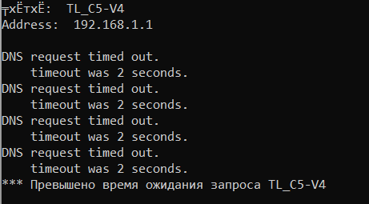

Приветствую, возникла проблема при подключении VPN
Делаю все как в гайдлайнах:
Ключи подхватываю из конфига, к серверу успешно подключается
Но не открываются сайты, nslookup вообще не может найти DNS

Настройки DNS (Включать автоматически и через root пробовал)
IPv6
Log:
Sep 9 14:26:31 TL_C5-V4: starting OpenVPN client...
Sep 9 14:26:31 openvpn-cli[3246]: NOTE: the current --script-security setting may allow this configuration to call user-defined scripts
Sep 9 14:26:33 openvpn-cli[3246]: WARNING: 'link-mtu' is used inconsistently, local='link-mtu 1560', remote='link-mtu 1559'
Sep 9 14:26:33 openvpn-cli[3246]: WARNING: 'comp-lzo' is present in local config but missing in remote config, local='comp-lzo'
Sep 9 14:26:35 dnsmasq[3124]: read /etc/hosts - 4 addresses
Sep 9 14:26:35 dnsmasq[3124]: read /etc/storage/dnsmasq/hosts - 0 addresses
Sep 9 14:26:35 dnsmasq-dhcp[3124]: read /etc/dnsmasq/dhcp/dhcp-hosts.rc
Sep 9 14:26:35 dnsmasq[3124]: ignoring nameserver 127.0.0.1 - local interface
Sep 9 14:26:35 dnsmasq[3124]: using nameserver 192.168.104.1#53
Sep 9 14:26:35 vpnc-script: tun0 up
Подскажите пожалуйста, в чем может быть проблема?
Edit1: Dns over Https отключен, в винде кастомных настроек нет вовсе | {kind=link}
{kind=link}
{kind=link}